Crop tay đã khóa
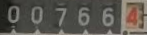
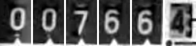
Chuỗi upstream làm tròn: 007664
Chuỗi lấy sàn để chẩn đoán: 007663
Giá trị bánh cuối chưa làm tròn: 7663.9
Confidence ô yếu nhất: 0.952
Khớp toàn chuỗi upstream: True; khớp phần nguyên: True
5 ảnh tái sử dụng; nhãn do tác nhân xem ảnh, chưa được người dùng xác nhận. Số bánh và phần lẻ là cấu hình thủ công. Không ghi dữ liệu ứng dụng. Hai chuỗi làm tròn/lấy sàn là chẩn đoán riêng; không phải chỉ số được duyệt.
{
"manual": {
"fullyLabelledOriginals": 3,
"rowsRead": 3,
"upstreamRoundedExact": 3,
"unroundedFloorExact": 1,
"aboveThreshold": 3,
"wrongAboveThreshold": 0,
"missingOrFailed": 0
},
"automatic": {
"fullyLabelledOriginals": 3,
"rowsRead": 2,
"upstreamRoundedExact": 1,
"unroundedFloorExact": 1,
"aboveThreshold": 1,
"wrongAboveThreshold": 0,
"missingOrFailed": 1
},
"originals": 5,
"derivedControls": 4,
"note": "Counts on provisional labels only; no accuracy estimate. Orientation diagnostics excluded."
}Đối chiếu tạm: 007664; 6 bánh; 1 số lẻ.


Chuỗi upstream làm tròn: 007664
Chuỗi lấy sàn để chẩn đoán: 007663
Giá trị bánh cuối chưa làm tròn: 7663.9
Confidence ô yếu nhất: 0.952
Khớp toàn chuỗi upstream: True; khớp phần nguyên: True
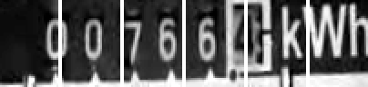
Chuỗi upstream làm tròn: 006611
Chuỗi lấy sàn để chẩn đoán: 006611
Giá trị bánh cuối chưa làm tròn: 6611.0
Confidence ô yếu nhất: 0.399
Khớp toàn chuỗi upstream: False; khớp phần nguyên: False
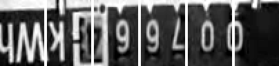
Chuỗi upstream làm tròn: 109900
Chuỗi lấy sàn để chẩn đoán: 109899
Giá trị bánh cuối chưa làm tròn: 109899.9
Confidence ô yếu nhất: 0.376
Khớp toàn chuỗi upstream: False; khớp phần nguyên: False
Đối chiếu tạm: 007664; 6 bánh; 1 số lẻ.
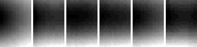
Chuỗi upstream làm tròn: 599959
Chuỗi lấy sàn để chẩn đoán: 599959
Giá trị bánh cuối chưa làm tròn: 599959.0
Confidence ô yếu nhất: 0.132
Khớp toàn chuỗi upstream: False; khớp phần nguyên: False
{'status': 'no_window', 'businessProposal': None}
Đối chiếu tạm: 007664; 6 bánh; 1 số lẻ.
Chuỗi upstream làm tròn: 999999
Chuỗi lấy sàn để chẩn đoán: 999999
Giá trị bánh cuối chưa làm tròn: 999999.0
Confidence ô yếu nhất: 0.162
Khớp toàn chuỗi upstream: False; khớp phần nguyên: False
{'status': 'no_window', 'businessProposal': None}
Đối chiếu tạm: 26762?; 6 bánh; 1 số lẻ.

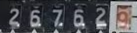
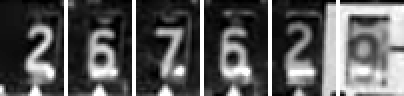
Chuỗi upstream làm tròn: 267629
Chuỗi lấy sàn để chẩn đoán: 267628
Giá trị bánh cuối chưa làm tròn: 267628.9
Confidence ô yếu nhất: 0.786
Khớp toàn chuỗi upstream: None; khớp phần nguyên: True
{'status': 'ambiguous_window', 'businessProposal': None}
Đối chiếu tạm: 13624?; 6 bánh; 1 số lẻ.

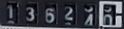
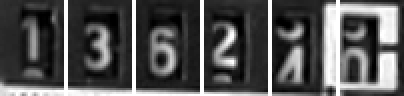
Chuỗi upstream làm tròn: 136240
Chuỗi lấy sàn để chẩn đoán: 136239
Giá trị bánh cuối chưa làm tròn: 136239.6
Confidence ô yếu nhất: 0.873
Khớp toàn chuỗi upstream: None; khớp phần nguyên: True
Chuỗi upstream làm tròn: 036410
Chuỗi lấy sàn để chẩn đoán: 036410
Giá trị bánh cuối chưa làm tròn: 36410.0
Confidence ô yếu nhất: 0.370
Khớp toàn chuỗi upstream: None; khớp phần nguyên: False
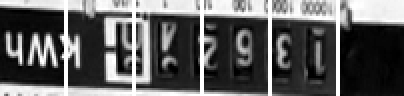
Chuỗi upstream làm tròn: 417917
Chuỗi lấy sàn để chẩn đoán: 417917
Giá trị bánh cuối chưa làm tròn: 417917.0
Confidence ô yếu nhất: 0.193
Khớp toàn chuỗi upstream: None; khớp phần nguyên: False
Đối chiếu tạm: 00001056; 8 bánh; 3 số lẻ.

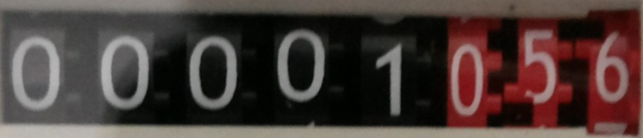
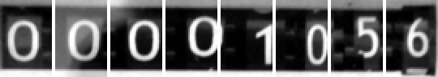
Chuỗi upstream làm tròn: 00001056
Chuỗi lấy sàn để chẩn đoán: 00001056
Giá trị bánh cuối chưa làm tròn: 1056.0
Confidence ô yếu nhất: 0.911
Khớp toàn chuỗi upstream: True; khớp phần nguyên: True
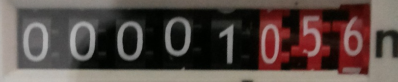
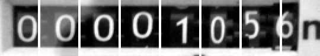
Chuỗi upstream làm tròn: 00001056
Chuỗi lấy sàn để chẩn đoán: 00001056
Giá trị bánh cuối chưa làm tròn: 1056.0
Confidence ô yếu nhất: 0.792
Khớp toàn chuỗi upstream: True; khớp phần nguyên: True
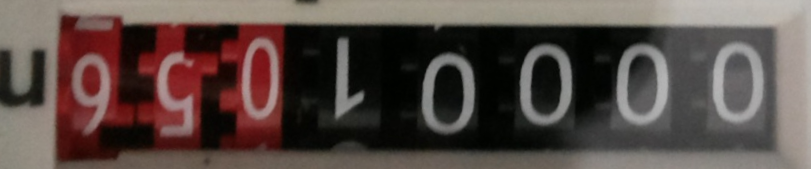
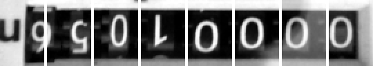
Chuỗi upstream làm tròn: 99000000
Chuỗi lấy sàn để chẩn đoán: 99000000
Giá trị bánh cuối chưa làm tròn: 99000000.0
Confidence ô yếu nhất: 0.319
Khớp toàn chuỗi upstream: False; khớp phần nguyên: False
Đối chiếu tạm: 00001056; 8 bánh; 3 số lẻ.
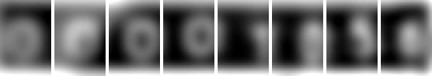
Chuỗi upstream làm tròn: 00001058
Chuỗi lấy sàn để chẩn đoán: 00001058
Giá trị bánh cuối chưa làm tròn: 1058.0
Confidence ô yếu nhất: 0.244
Khớp toàn chuỗi upstream: False; khớp phần nguyên: True
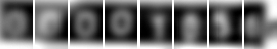
Chuỗi upstream làm tròn: 00001058
Chuỗi lấy sàn để chẩn đoán: 00001058
Giá trị bánh cuối chưa làm tròn: 1058.0
Confidence ô yếu nhất: 0.174
Khớp toàn chuỗi upstream: False; khớp phần nguyên: True
Đối chiếu tạm: 00001056; 8 bánh; 3 số lẻ.
Chuỗi upstream làm tròn: 99999999
Chuỗi lấy sàn để chẩn đoán: 99999999
Giá trị bánh cuối chưa làm tròn: 99999999.0
Confidence ô yếu nhất: 0.162
Khớp toàn chuỗi upstream: False; khớp phần nguyên: False
{'status': 'no_window', 'businessProposal': None}
Đối chiếu tạm: 13038; 5 bánh; 1 số lẻ.

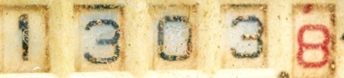
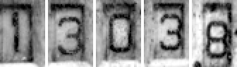
Chuỗi upstream làm tròn: 13038
Chuỗi lấy sàn để chẩn đoán: 13037
Giá trị bánh cuối chưa làm tròn: 13037.9
Confidence ô yếu nhất: 0.997
Khớp toàn chuỗi upstream: True; khớp phần nguyên: True
{'status': 'no_window', 'businessProposal': None}